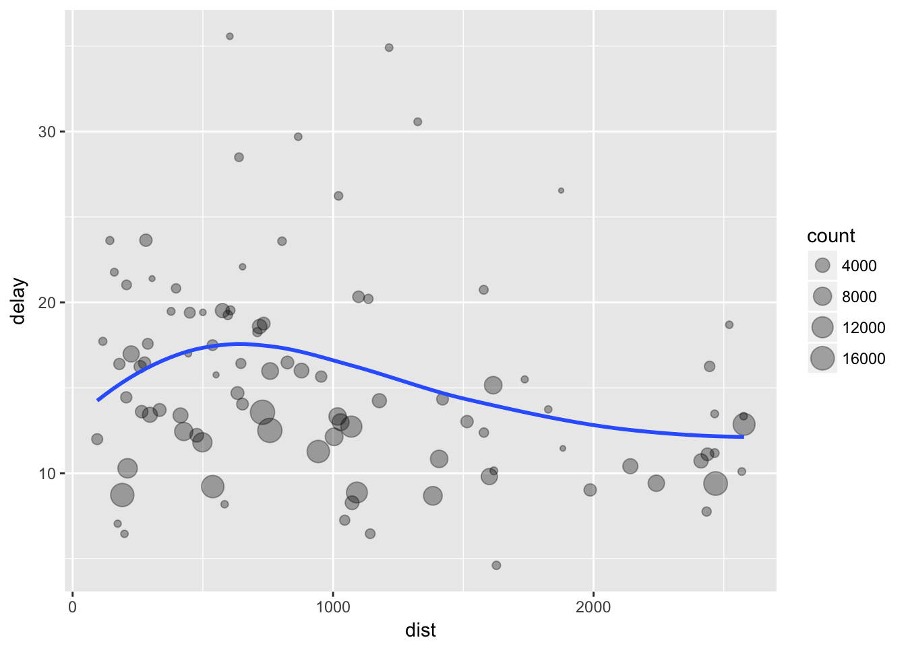

En esta sesion veremos el tipo de datos Tibble. Este tipo de datos es similar a un dataframe pero que facilita mucho los filtrados.
library(dplyr)
library(nycflights13)flights## # A tibble: 336,776 x 19
## year month day dep_t… sched_… dep_d… arr_… sched… arr_d… carr… flig…
## <int> <int> <int> <int> <int> <dbl> <int> <int> <dbl> <chr> <int>
## 1 2013 1 1 517 515 2.00 830 819 11.0 UA 1545
## 2 2013 1 1 533 529 4.00 850 830 20.0 UA 1714
## 3 2013 1 1 542 540 2.00 923 850 33.0 AA 1141
## 4 2013 1 1 544 545 -1.00 1004 1022 -18.0 B6 725
## 5 2013 1 1 554 600 -6.00 812 837 -25.0 DL 461
## 6 2013 1 1 554 558 -4.00 740 728 12.0 UA 1696
## 7 2013 1 1 555 600 -5.00 913 854 19.0 B6 507
## 8 2013 1 1 557 600 -3.00 709 723 -14.0 EV 5708
## 9 2013 1 1 557 600 -3.00 838 846 - 8.00 B6 79
## 10 2013 1 1 558 600 -2.00 753 745 8.00 AA 301
## # ... with 336,766 more rows, and 8 more variables: tailnum <chr>, origin
## # <chr>, dest <chr>, air_time <dbl>, distance <dbl>, hour <dbl>, minute
## # <dbl>, time_hour <dttm>unoEnero<-filter(flights, month==1, day==1)Podemos hacer filtrados más complejos como por ejemplo:
#Llegadas con más de 120 minutos
retrasoLlegadas<-filter(flights, arr_delay > 120)
retrasoLlegadas## # A tibble: 10,034 x 19
## year month day dep_… sche… dep_… arr_… sche… arr_… carr… flig… tail…
## <int> <int> <int> <int> <int> <dbl> <int> <int> <dbl> <chr> <int> <chr>
## 1 2013 1 1 811 630 101 1047 830 137 MQ 4576 N531…
## 2 2013 1 1 848 1835 853 1001 1950 851 MQ 3944 N942…
## 3 2013 1 1 957 733 144 1056 853 123 UA 856 N534…
## 4 2013 1 1 1114 900 134 1447 1222 145 UA 1086 N765…
## 5 2013 1 1 1505 1310 115 1638 1431 127 EV 4497 N179…
## 6 2013 1 1 1525 1340 105 1831 1626 125 B6 525 N231…
## 7 2013 1 1 1549 1445 64.0 1912 1656 136 EV 4181 N211…
## 8 2013 1 1 1558 1359 119 1718 1515 123 EV 5712 N826…
## 9 2013 1 1 1732 1630 62.0 2028 1825 123 EV 4092 N169…
## 10 2013 1 1 1803 1620 103 2008 1750 138 MQ 4622 N504…
## # ... with 10,024 more rows, and 7 more variables: origin <chr>, dest
## # <chr>, air_time <dbl>, distance <dbl>, hour <dbl>, minute <dbl>,
## # time_hour <dttm>#Llegadas con más de 120 y el retraso en la salida también mayor de 120
retrasoLlegadasYSalidas<-filter(flights, arr_delay > 120 & dep_delay > 120)
retrasoLlegadasYSalidas## # A tibble: 8,335 x 19
## year month day dep_… sche… dep_… arr_… sche… arr_… carr… flig… tail…
## <int> <int> <int> <int> <int> <dbl> <int> <int> <dbl> <chr> <int> <chr>
## 1 2013 1 1 848 1835 853 1001 1950 851 MQ 3944 N942…
## 2 2013 1 1 957 733 144 1056 853 123 UA 856 N534…
## 3 2013 1 1 1114 900 134 1447 1222 145 UA 1086 N765…
## 4 2013 1 1 1815 1325 290 2120 1542 338 EV 4417 N171…
## 5 2013 1 1 1842 1422 260 1958 1535 263 EV 4633 N181…
## 6 2013 1 1 1856 1645 131 2212 2005 127 AA 181 N323…
## 7 2013 1 1 1934 1725 129 2126 1855 151 MQ 4255 N909…
## 8 2013 1 1 1938 1703 155 2109 1823 166 EV 4300 N185…
## 9 2013 1 1 1942 1705 157 2124 1830 174 MQ 4410 N835…
## 10 2013 1 1 2006 1630 216 2230 1848 222 EV 4644 N149…
## # ... with 8,325 more rows, and 7 more variables: origin <chr>, dest
## # <chr>, air_time <dbl>, distance <dbl>, hour <dbl>, minute <dbl>,
## # time_hour <dttm>También podemos usar rangos, para ello:
eneroFebreroMarzo <- filter(flights, month %in% c(1,2,3))
eneroFebreroMarzo## # A tibble: 80,789 x 19
## year month day dep_t… sched_… dep_d… arr_… sched… arr_d… carr… flig…
## <int> <int> <int> <int> <int> <dbl> <int> <int> <dbl> <chr> <int>
## 1 2013 1 1 517 515 2.00 830 819 11.0 UA 1545
## 2 2013 1 1 533 529 4.00 850 830 20.0 UA 1714
## 3 2013 1 1 542 540 2.00 923 850 33.0 AA 1141
## 4 2013 1 1 544 545 -1.00 1004 1022 -18.0 B6 725
## 5 2013 1 1 554 600 -6.00 812 837 -25.0 DL 461
## 6 2013 1 1 554 558 -4.00 740 728 12.0 UA 1696
## 7 2013 1 1 555 600 -5.00 913 854 19.0 B6 507
## 8 2013 1 1 557 600 -3.00 709 723 -14.0 EV 5708
## 9 2013 1 1 557 600 -3.00 838 846 - 8.00 B6 79
## 10 2013 1 1 558 600 -2.00 753 745 8.00 AA 301
## # ... with 80,779 more rows, and 8 more variables: tailnum <chr>, origin
## # <chr>, dest <chr>, air_time <dbl>, distance <dbl>, hour <dbl>, minute
## # <dbl>, time_hour <dttm>Si por ejemplo queremos ordenar las instancias en función de origen y destino:
origenDestino <-arrange(flights, origin, dest)
origenDestino## # A tibble: 336,776 x 19
## year month day dep_t… sched… dep_del… arr_… sche… arr_d… carr… flig…
## <int> <int> <int> <int> <int> <dbl> <int> <int> <dbl> <chr> <int>
## 1 2013 1 1 1315 1317 - 2.00 1413 1423 -10.0 EV 4112
## 2 2013 1 1 1655 1621 34.0 1804 1724 40.0 EV 3260
## 3 2013 1 1 2056 2004 52.0 2156 2112 44.0 EV 4170
## 4 2013 1 2 1332 1327 5.00 1419 1433 -14.0 EV 4316
## 5 2013 1 2 1746 1621 85.0 1835 1724 71.0 EV 3260
## 6 2013 1 2 2148 2004 104 2234 2112 82.0 EV 4170
## 7 2013 1 3 1716 1619 57.0 1803 1723 40.0 EV 4271
## 8 2013 1 3 2031 2038 - 7.00 2131 2139 - 8.00 EV 4309
## 9 2013 1 4 1618 1619 - 1.00 1714 1723 - 9.00 EV 4271
## 10 2013 1 4 2031 2000 31.0 2131 2101 30.0 EV 4309
## # ... with 336,766 more rows, and 8 more variables: tailnum <chr>, origin
## # <chr>, dest <chr>, air_time <dbl>, distance <dbl>, hour <dbl>, minute
## # <dbl>, time_hour <dttm>Si queremos seleccionar algunas columnas, se pueden seleccionar de manera sencilla de la sigueiente manera:
#Selección básica
seleccionadas <- select(flights, year, month, day)
#Selección por rango
seleccionadas <- select(flights, year:dest)
#Selección por rango inverso
seleccionadas<- select(flights, -(year:dest))
#Las variables que empiezan por a
seleccionadas<- select(flights, starts_with("a"))
#Las variables que acaban por a
seleccionadas<- select(flights, ends_with("a"))
#Las variables que contienen -
seleccionadas<- select(flights, contains("a"))El tipo de datos Tibble también facilita el renombrado de variables.
conCambio <- rename(flights, tailnumber=tailnum) Introducción de nuevas variables. Útil para el proceso de generación de características.
versionNueva <- mutate(flights, gain=arr_delay-dep_delay)
#Si solo queremos tener las nuevas variables en lugar de mutate transmutate
versionNueva <- mutate(flights, gain=arr_delay-dep_delay)El tipo de datos Tibble también permite el agrupamiento de isntancias, similar al group by de SQL.
porDia<-group_by(flights, year, month, day)
resume<-summarise(porDia, delay=mean(dep_delay,na.rm = TRUE))
resume## # A tibble: 365 x 4
## # Groups: year, month [?]
## year month day delay
## <int> <int> <int> <dbl>
## 1 2013 1 1 11.5
## 2 2013 1 2 13.9
## 3 2013 1 3 11.0
## 4 2013 1 4 8.95
## 5 2013 1 5 5.73
## 6 2013 1 6 7.15
## 7 2013 1 7 5.42
## 8 2013 1 8 2.55
## 9 2013 1 9 2.28
## 10 2013 1 10 2.84
## # ... with 355 more rowsAhora vamos a encadenar ordenes:
porDestino <- group_by(flights, dest)retraso <- summarise(porDestino, count=n(), dist=mean(distance,na.rm = TRUE), delay=mean(dep_delay,na.rm = TRUE))filtrado<-filter(retraso, count > 20, dest != "HNL")
filtrado## # A tibble: 96 x 4
## dest count dist delay
## <chr> <int> <dbl> <dbl>
## 1 ABQ 254 1826 13.7
## 2 ACK 265 199 6.46
## 3 ALB 439 143 23.6
## 4 ATL 17215 757 12.5
## 5 AUS 2439 1514 13.0
## 6 AVL 275 584 8.19
## 7 BDL 443 116 17.7
## 8 BGR 375 378 19.5
## 9 BHM 297 866 29.7
## 10 BNA 6333 758 16.0
## # ... with 86 more rowsPor último dibujamos el gráfico.
library(ggplot2)
ggplot(data=filtrado, mapping = aes(x=dist, y=delay)) +
geom_point(aes(size=count), alpha=1/3) +
geom_smooth(se=F)## `geom_smooth()` using method = 'loess'
Podemos hacerlo todo en una misma orden de la siguiente manera:
resultado<- flights %>%
group_by(dest) %>%
summarise(count=n(),
dist=mean(distance,na.rm = TRUE),
delay=mean(dep_delay,na.rm = TRUE)) %>%
filter(count > 20, dest != "HNL")
ggplot(data=resultado, mapping = aes(x=dist, y=delay)) +
geom_point(aes(size=count), alpha=1/3) +
geom_smooth(se=F)## `geom_smooth()` using method = 'loess'Podemos convertir los datos a Tibble, usando como siempre la funcion as:
datos<-as_tibble(iris)
datos## # A tibble: 150 x 5
## Sepal.Length Sepal.Width Petal.Length Petal.Width Species
## <dbl> <dbl> <dbl> <dbl> <fctr>
## 1 5.10 3.50 1.40 0.200 setosa
## 2 4.90 3.00 1.40 0.200 setosa
## 3 4.70 3.20 1.30 0.200 setosa
## 4 4.60 3.10 1.50 0.200 setosa
## 5 5.00 3.60 1.40 0.200 setosa
## 6 5.40 3.90 1.70 0.400 setosa
## 7 4.60 3.40 1.40 0.300 setosa
## 8 5.00 3.40 1.50 0.200 setosa
## 9 4.40 2.90 1.40 0.200 setosa
## 10 4.90 3.10 1.50 0.100 setosa
## # ... with 140 more rows